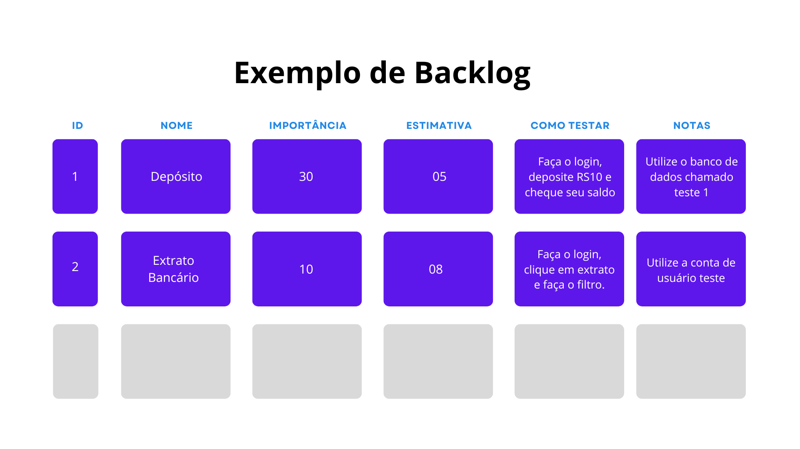

<!-- prettier-ignore -->
{% extends 'NHTemplate.html' %}

{% block title %}Backlog{% endblock %}
{% block color %}style="background-color: rgba(47, 177, 250, 0.65);"{% endblock %}
{% block iconName %}method{% endblock %}
{% block contentTitle %}Product Owner{% endblock %}
{% block subtitle %}Backlog{% endblock %}
{% block content %}

<div class="h-75 w-75 default-main po-back-main">
  <div class="default-textbox po-back-textbox">
    <p class="default-para po-back-para">
      O Backlog nada mais é do que uma planilha na qual são listados todos os requisitos do projeto em ordem decrescente
      de prioridade (das tarefas mais importantes para as menos).
    </p>

    <p class="default-para po-back-para">
      É indispensável que toda equipe tenha logo no início do projeto um Backlog bem definido para que todos consigam
      visualizar não apenas o que estará sendo realizado no momento presente, mas também fazer uma projeção de quais as
      responsabilidades que virão.
    </p>

    <p class="default-para po-back-para">
      É necessário ressaltar que a planilha Backlog não é uma ferramenta de gestão interna do grupo, mas um instrumento
      responsável por orientar aqueles que estão dentro da produção e os que estão fora dela, que é o caso do cliente
      com o qual a equipe tem cooperado.
    </p>
    <p class="default-para po-back-para">
      É fundamental que o cliente e o time estejam na mesma página quanto às expectativas e execução do projeto para que
      possam juntos elaborar soluções que sejam eficazes e superem o esperado.
      <!--NOT VISIBLE FOR NOW-->
      <span style="color: red; display: none">
        (OVERLAY - VIAGEM DE CARRO/ADAPTAÇÃO Pense em uma longa viagem de carro de cerca de 10h de duração. Digamos que
        o indivíduo iniciou sua viagem às 12h e decidiu usar roupas mais leves devido ao calor do horário. Porém, com o
        passar do tempo o Sol foi se pondo e a temperatura foi esfriando, passando a fazer mais sentido para o viajante
        o uso de roupas mais pesadas para se esquentar. Assim é com o decorrer do projeto. Conforme ele se desenrola,
        alguns pontos antes estabelecidos vão perdendo o sentido, fazendo-se necessárias mudanças que fazem mais sentido
        na situação.)
      </span>
    </p>
    <p class="default-para po-back-para po-back-para-negr">
      Lembrando que, como todos os elementos do Scrum, o Backlog também se adapta a mudanças. Uma coisa é certa: haverá
      mudanças nos requisitos conforme as Sprints forem sendo realizadas!
    </p>
    
    <div class="po-back-split-text-block">
      <p class="default-para po-back-para">
        Além do Backlog geral do produto, outra planilha essencial para a gestão de tarefas e responsabilidades é a
        planilha de BACKLOG DA SPRINT. Ela possui a mesma essência da planilha geral, mas com algumas identificações e
        especificações a mais para que essa possa ser executada pela equipe.
      </p>
      <p class="default-para po-back-para">
        Nessa planilha, todos os requisitos são descritos por meio do que chamamos de USER STORIES, que tem por objetivo
        explicar o requisito no formato de um desejo feito por alguém sem o conhecimento técnico, mas que expõe qual a
        expectativa do usuário em relação ao produto que ele irá dispor futuramente.
      </p>
    </div>
    <p class="default-para po-back-para">
      O formato padrão de uma US bem formulada precisa ter as seguinte informações:
    </p>

    <table class="table po-back-table table-bordered">
      <thead>
        <tr>
          <th scope="col">Individuo que expressa desejo</th>
          <th scope="col" class="table-active">Ação/Elemento que desejo interagir</th>
          <th scope="col">Porquê/Motivo da funcionalidade, o que ela irá agregar à experiência</th>
        </tr>
      </thead>
      <tbody>
        <tr>
          <td class="table-danger">Eu, como usuário aluno da plataforma,</td>
          <td class="table-warning">desejo uma pagina de contato com os professores,</td>
          <td class="table-info">para que possa tirar minhas dúvidas quanto ao conteúdo lecionado</td>
        </tr>
      </tbody>
    </table>

    <p class="default-para po-back-para">
      Outro quesito que deve ser expresso no Backlog da Sprint é a Estimativa de Esforço das tarefas. Nesse campo será
      exposto qual é, segundo a perspectiva do grupo, o tempo necessário para realização da determinada tarefa em função
      da dificuldade que ela possui para ser concretizada. Em seguida, são colocados o respectivo requisito do Backlog
      do Produto que define aquela US e o seu critério de aceitação, sendo esse último uma das partes principais dessa
      planilha.
    </p>
    <p class="default-para po-back-para">
      Por fim, cada tarefa deverá apresentar um critério de aceitação, o qual indica o que chamamos de Definition of
      Done (DoD), ou Definição de Feito. Com base nesse critério o grupo avalia se o requisito pode ser classificado
      como concluído ou não.
    </p>
  </div>
</div>

<!-- prettier-ignore -->
{% endblock %}
{%block btnback%}/product-owner/valordoproduto{%endblock%}
{%block btnnext %}/scrum-master/introducao{%endblock%}
